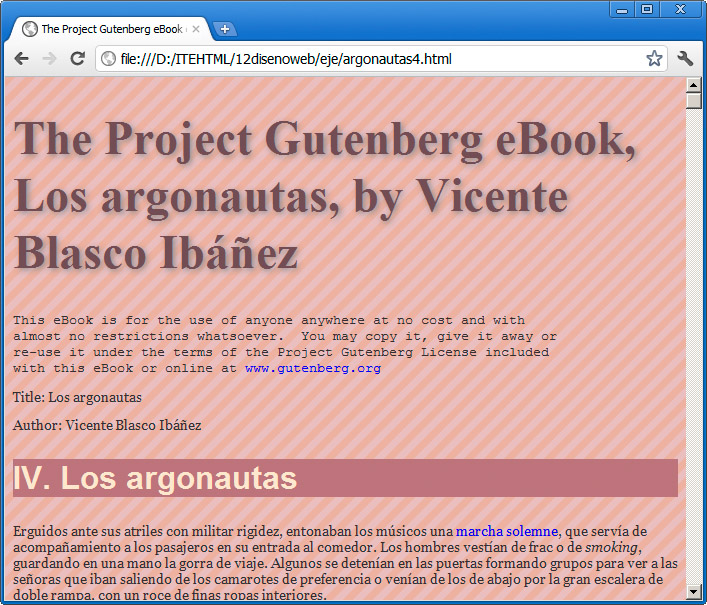

La propiedad background-image se puede aplicar a una gran cantidad de etiquetas y consigue que se muestre una imagen de fondo.
Su formato es el siguiente, aplicada por ejemplo al cuerpo de la página:
body { background-image: url("images/fondo.png"); }
El resultado sería el que se muestra en la figura.

Una imagen, en este caso tan pequeña como se puede observar en la figura siguiente, se toma como fondo de todo el documento, repitiéndose una y otra vez hasta cubrir toda la página.
Repeticiones
No siempre nos va a interesar que la imagen se reproduzca indefinidamente. Por ello, a continuación de la url podemos indicar el modo de repetición a través de la propiedad background-repeat:
- repeat: para que se repita. Es el valor predefinido, por lo que lo podemos omitir.
- repeat-x: para que sólo se repita horizonalmente, no verticalmente.
- repeat-y: para que se repita en el eje vertical.
- no-repeat: para que no se repita nunca.
Por ejemplo, para que sólo se repita verticalmente añadiríamos esta línea:
body {
background-color: #DEB0A0;
background-image: url("images/etching-small.jpg");
background-repeat: repeat-y;
}
El resultado es que la imagen sólo aparece en el eje vertical.
Fondo fijo
Todavía podemos mejorar el conjunto. En los casos en los que la imagen no debe ocupar todo el fondo podemos emplear la propiedad background-attachment para controlar la posición de la imagen, con los siguientes valores:
- scroll: la imagen se desplazará al desplazarnos arriba y abajo cuando el documento sea largo. Es el valor predeterminado.
- fixed: la imagen se queda fija aunque nos desplacemos hacia abajo.
- local: similar al anterior, aunque la imagen está fijada al contenido del elemento en lugar de al propio elemento.
Para comprender el uso de esta propiedad, lo mejor es probar esta regla:
body {
background-color: #DEB0A0;
background-image: url("images/etching-small.jpg");
background-repeat: no-repeat;
background-attachment: fixed;
}
Al bajar en el documento veremos como la imagen se queda fija en el fondo, en lugar de desaparecer, que sería el comportamiento estándar.
Colocación del fondo
La propiedad background-position se emplea para ubicar el fondo a nuestro gusto, mediante los valores x e y, ya sea en formato de píxeles, mediante porcentajes o mediante indicaciones de posición (center, top, bottom, right o left).
Por ejemplo, probaremos esta regla:
body {
background-color: #DEB0A0;
background-image: url("images/etching-small.jpg");
background-repeat: no-repeat;
background-attachment: fixed;
background-position: bottom right;
}
La imagen se ha desplazado a la esquina inferior derecha (bottom right), como se muestra en la figura.
Si estamos empleando una imagen como fondo de un bloque o un elemento similar y la imagen es más grande que el elemento que la va a contener podemos emplear los valores cover (ajusta la imagen al bloque sin deformarla) o contain (reduce la imagen para ajustarla al bloque, también sin deformarla).
La propiedad background
Como sucedía con la propiedad font, podemos fusionar todas las propiedades relacionadas con los fondos en una sola mediante background.
El ejemplo que hemos venido realizando se podría expresar también de esta manera:
body {
background: #DEB0A0 url("images/etching-small.jpg") no-repeat fixed bottom right;
}
En primer lugar indicamos el color de fondo, si no queremos que aparezca ningún color indicaremos el término transparent. Luego viene la dirección de la imagen, seguida de los diferentes parámetros que hemos visto.
Actividad 6
Incorporaremos nuestro propio fondo, probando a colocarlo en diferentes lugares y comprobando lo que sucede al cambiar de tamaño la ventana del navegador y al desplazarnos con el documento. Intentaremos decidir qué tipo de ajuste favorece más la legibilidad del texto y cuál menos.
No sólo para body
Las prácticas que hemos realizado se han centrado en aplicar fondos a la etiqueta <body>; tenemos que tener en mente que esto no tiene por qué ser así. Es muy habitual aplicar imágenes de fondo a pequeños bloques definidos por un <div>, e incluso a cualquier tipo de cabecera del documento.
Pregunta de Elección Múltiple
|
background-image.
| |
|
background-no-repeat.
| |
|
background-attachment.
| |
|
Ninguna de las anteriores es correcta.
|